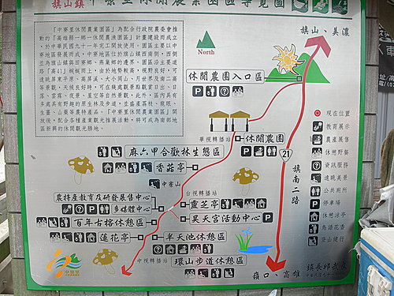
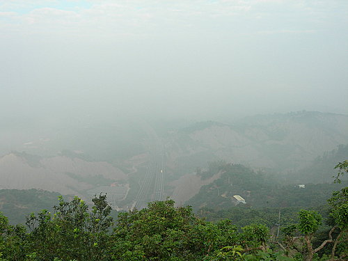
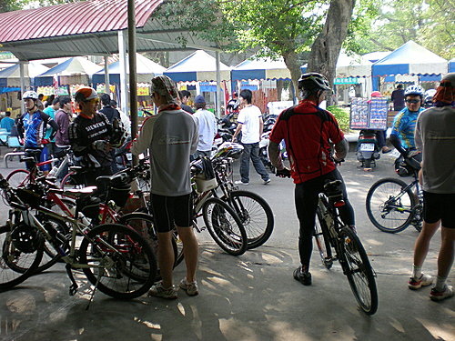
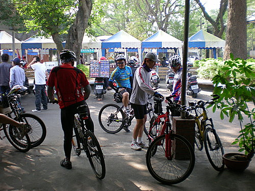

中寮山景觀
稱中寮山為高雄縣自行車友之聖山，一點也不為過，因其公路貫穿整個稜線，許多人可騎自行車或開到山上賞幽，健行的方式上山也很受歡迎。沿線風景清幽，公路延稜線而上，西側的「月世界」惡地形是最吸引人的景觀，甚至大、小崗山也在眼前。
中寮山亦以山頂上的電視台或電台的轉播站而聞名，整個大高雄地區和高屏平原，以及嘉南平原南部都是它的涵蓋範圍，尤其是三家無線電視台，在山上都有轉播站，且南二高中寮隧道穿過中寮山，中寮山海拔421公尺，屬玉山山脈的餘脈。此山雖不高，但因方圓十餘公里內沒有更高的山峰，故視野甚佳，站在山頂上，可將台南、高雄、屏東等縣市的廣大平原一覽無遺。
騎自行車攻頂後，立於蓮花亭旁俯看月世界之惡地形，及南二高穿流不息的汽車穿越跨下，深呼一口氣，真是讓人心曠神怡……….
Date：96年12月 Weather：晴
Member：9人/河東獅+雄大港車隊
Place：高雄縣中寮山+旗山
Distance：來回約40km
The time of cycling：5小時
@出發--金山道院
@清龍宮--中寮山入山口旁
@登頂後於蓮花亭與雄大港車隊會合

@周圍景觀圖

@立於中寮山頂可俯瞰南二高車潮穿越跨下
@於旗山糖廠清涼一下慰勞自己
@

@旗山糖廠經常是車友的最佳休息站

明年有很多連假喔 ~~
農曆過年是2/17~2/22 請個23號星期五就繼續連休星期六星期日 ~ 連休 9天！ (究感心ㄟ...)
意思就是說再請26~27號 ~就又連到 228假期 ~只要請三? ?/FONT> !!! 就可以 連休12天 !
(爽 YY) 清明節 4/5~ 請一天4/6號 就連休4天 ~可以誠心祭祖 !!
端午節 6/19 從 6/16開始~請一天 6/18~連休4天 肉粽吃個粗飽 !! (爽 YYY)
中秋節 9/25 從9/22開始 ~請一天9/24~也可 連休4天 月餅吃到反胃!! (爽 YYYYYYY....)
要訂飯店的快去訂~~~ 要訂機票的也快去訂 ~~
1. 228------- 2/25~2/28 ( 2/27請特休 ) ----4 天
2. 勞動節 --- 4/29~5/1 -----3 天
3. 中秋節 +國慶日 10/6~10/10( 10/9 請特休 ) -------5 天
4. 把工作辭掉 可以連休365天 -----( 爽 ..嗚 ...) 祝大家工作順心！
愛騎車的男人最帥喔!~
單車運動淺論 孫志中 2008.1.20 一、前言 單車運動，已在歐美國家流行三十年以上了，其原因在於他們早已研究了解，單車運動是一種方便於各種年齡層次的人的運動方式，西方先進國家於馬路或道路早已設有單車專用道，可見於西方國家不只於科技有先進，於人文體能的運動方面也是卓見於我們之前。 二、單車運動與身體的相對關係 單車可以說是所有運動中最可以控制有氧性高的運動，於單車運動中透過呼吸的調節，可以增進心肺功能外，更可增加血液中的含氧量，在身體中氧氣在血液中是佔有非常大的功能，血液的含氧指數能提昇免疫力外，更是在恢復體力不可或缺的元素，且在醫學的報導血氧指數高可增益自體免疫外更可預防感染疾病。 三、騎車後對身體的幫助 1.西方醫學方面 我們人體的每吋肌膚或各部位器官都是細胞組成，動脈血管所供應的血液中，有氧氣隨著動脈血管包涵微血管供應至各細胞，而血液中同時也含有血糖來維持身體活動時的動力，所以在身體中分分秒秒的在運作全身細胞的血液與血管包含心臟的功能是很重要的。單車運動時可以後說利用心跳的速度加壓了血管的壓力來擴充血管的彈性與血流速度進而可以提昇血液中之含氧量，不僅可活血各部細胞並可使得免疫力之提昇，在現代各大醫院中心，血管的疾病大概就已佔所有門診的1/3診數，可見人類在惡化或退化後最易顯見的現象是血管的血液兩者退化後而使得其他各部之器官而衰退。 2.中醫方面的理論 中醫的身體表現在於經脈的行走，與穴位的通順而影響到氣的行路是否通順，運動之熱能除了可增進長的循環，並可將穴位打通五臟六腑的器官與曲肢都有它行走的穴點及氣路，但氣是無形，但卻可由穴位來再確認它的存在，以中醫或易經來說，身體含有五行器官及陰陽，陰是肉身看的到，陽是氣是看不到，陰與陽的調和才可使五行的器官運行正常，這點在中醫的理論也是老袓先的智慧，在腳底板下有著全身所在器官之穴位，所以在單車運動時腳板的運作可使氣推行至各部器官，使功能恢復，骨格也可強壯，這都可以推論的印證。 四、有氧運動種類之比較 所謂有氧運動即是可利用運動後增進心肺功能及增益血氧，使身體透過運功後可到達保養之功能。A游泳 B跑步 D騎單車 時間 效能 身體 傷害 副作用 有氧 效能 可持 續性 趣味性 花費 1單車 1~3H 90% 臺灣馬路險 100% 依體力訓練可達3~10H 具休閒性 1萬~10萬 2游泳 Over 2H 70% 1.不易暖身 2.易抽筋 3.傷皮膚 80% 1~2H 較單調 1年1萬~2萬 3跑步 1~3H 80% 1.傷膝蓋 2.易傷腳踝 95% 30M~2H 單調 較不需花費 4登山 2~5H 95% 1.山中有意外，不易救援 2.傷膝 3.危險性高 100% 1~10H 有休閒性 五千元~10萬 五、單車運動之原理 A.人之身體就如同機器般，每種的運動、活動，也必須有保養之方法，身體的運作模式也如同汽車般的原理，需有運動前之暖身後才能漸進加速，才得以有較好之效能。所以單車運動前30分鐘需以暖身之節拍，或心跳數來做高速運動前奏暖身，爾後再循次漸進增加心跳。其功效是使心血管的彈性鬆軟，來增加血液之流暢速度。 B.一般騎登山車於山路之間的騎乘有坡度的騎法才是有助於身體的運動。 C.因為心跳數的增加可增血液流量與流速，就可以增加血氧來快速恢復體力，可使體力的訓練達到增加之效能。 D.騎登山車於山路訓練後，除可增進血氧量，並可增進身體之新陳代謝，進而達到淨化身體之功能。 E.單車的騎乘及心跳的控制這都必需仰賴登山車變速技巧的換，能於平路或上坡路段調整腳力的輕重後，變速調整至隨切的檔位，如此心跳的控制，與單車騎乘才能得以顯見增加對身體的效益。 F.單車運動是一門值得深入了解與學習的專業學科，它可助身體的機能於生命60~80歲間還可手靈活延緩退化，如有財力、沒體力，晚年就無法享受康富的生活> 各為河東師車友你們好. 因為上星期在台東有緣與貴隊車友洪先生在初鹿相遇而談及有關於單車地情事相談甚歡..以上文章提供給各位參考.如果還有 有關於騎單車地技術問題可以在 留言板上再討論.台中有一座大雪山也是騎單車地好路線..如果有機會及行程要來騎..我可以帶路為各位服務...台中之中間份子..孫志中.祝各位天天年輕.身體健康